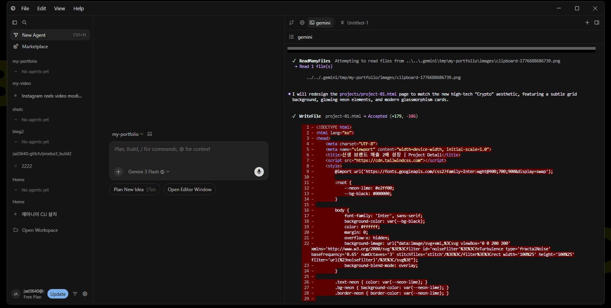
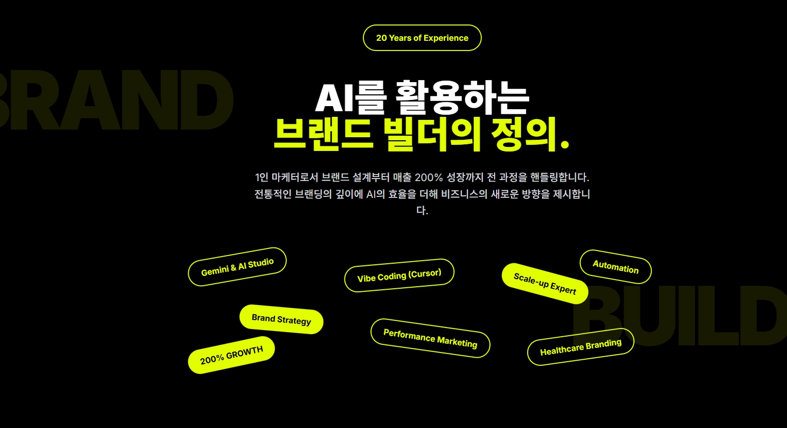

20년의 기획 통찰,
AI 시스템으로 경영 효율을 극대화하다.
과거의 성공에 머물지 않습니다.
Cursor와 Gemini를 활용해 마케팅 프로세스를 직접 자동화하며 리드타임을 혁신적으로 단축하는 '시스템 마케터'입니다.
노련한 기획자가 AI라는 도구를 완벽히 지배할 때 비즈니스의 물리적 시간은 단축됩니다. 단순한 기술 도입이 아닌, 브랜드의 영혼을 이해하는 기획자의 안목에 AI의 무한한 생산성을 더해 결과의 격차를 만듭니다.
AI Powered Workflow
경험의 깊이를 기술의 속도로 전환하는 마케팅 자동화 및 빌드 프로세스입니다.
바이브 코딩 실무 구현
구글 AI 스튜디오를 활용한 블로그 및 카드뉴스 자동화 구축 완료. 기획자가 직접 코딩하여 실무의 가려운 곳을 정확히 해결합니다.
AI 기반 데이터 전략
데이터로 검증하고 AI로 확장하는 퍼포먼스 기획. 대규모 데이터를 초고속 분석하여 타겟 맞춤형 설득 로직을 추출하고 광고 효율을 극대화합니다.
Core Execution
기획부터 실행까지, AI를 도구로 완성한 실무 결과물입니다.

고관여 제품 전용 3단계 설득 퍼널 시스템
타겟의 심리를 데이터로 분석하여 이탈 없는 전환을 유도하는 최적화된 콘텐츠 설계를 구현했습니다.

데이터 중심의 하이엔드 브랜딩: 심미성을 넘어 성과를 디자인합니다.
브랜드의 핵심 가치를 시각적 데이터로 치환하여 시장에서 독보적인 프리미엄 포지셔닝을 구축합니다.
Career History
경험은 깊게, 기술은 앞서게:
변화를 주도하는 20년차 마케터
한 조직에서 7~8년 이상 근무하며 프로젝트의 탄생부터 성숙까지 책임진 '그릿(Grit)' 있는 전문가입니다. 깊은 내공에 AI 엔진을 달아 마케팅의 새로운 기준을 만듭니다.
시스템 마케터 / 브랜드 아키텍트
"20년의 경험은 AI에게 가장 정확한 질문을 던지는 힘이 됩니다. 현장 기획의 본질을 잃지 않으면서 기술을 도구로 활용합니다."
대산 홍보팀
통합 마케팅 전략 수립 및 브랜드 커뮤니케이션 채널 총괄 관리.
라이프앤사이언스 디자인팀
디자인 시스템 구축 및 비주얼 아이덴티티 디렉팅. 장기적인 브랜드 일관성 유지 전략 실행.
디자인 및 마케팅 실무 완성기
킴퍼니처 / 대구광역자활센터 / 정원테크 등에서 다양한 산업군의 브랜딩과 디자인을 경험했습니다.